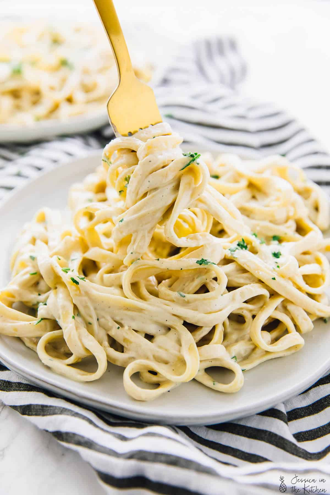

cheesy alfredo

This recipe is a creamy, cheesy, garlic alfredo sauce crafted for those who just crave a nice smooth parmesan flavor.
This alfredo sauce was handcrafted and designed to bring out the upmost strongest flavors of garlic parmesan,
morphed into the smoothness of an alfredo sauce. the heavywhipping cream brings the texture to the next level,
making it soft and delicate but hard enough to give an easy chew.
INGREDIENTS
- butter
- heavy whipping cream
- garlic
- cracked black pepper
- shreded/grated parmesan cheese
- any form of noodle you prefer
OPPTIONAL INGREDIENTS
- grilled chicken
- fresh toppings such as chives or parsely
the opptional addition of grilled chicken can bring this whole meal to a new level
but is perfectly fine without the extra protein. aswell as the chicken, green chives
or parsley can be used to top the dish after it is finished adding some more depth and
flavor to the overall dish
cooking steps
- you wanna start off by bringing a pot of salted water to boil (add noodles when water is boiling)
- while the pot sits you wanna grab a sauce pan and in the pan melt 1 stick of butter in the pan on med/low heat
- after the butter is completely melted pour in 2 cups of heavy whipping cream
- now add 1 teaspoon of cracked black pepper
- following the black pepper you wanna add 1 tabblespoon of chopped/minced garlic
- after mixing all of this together and letting it simmer for about a minute you now wanna start sprinkling in your
parmesan cheese in small bits continue adding it bit by bit untill you get to the consistancy you want
- by this time your noodles are either done or getting close you wanna drain the noodles(opptional save some of the pasta water)
and pour them directly into the sauce pan mix the noodles and alfredo sauce together. mix in any of the saved pasta water to change
the consistancy to your liking